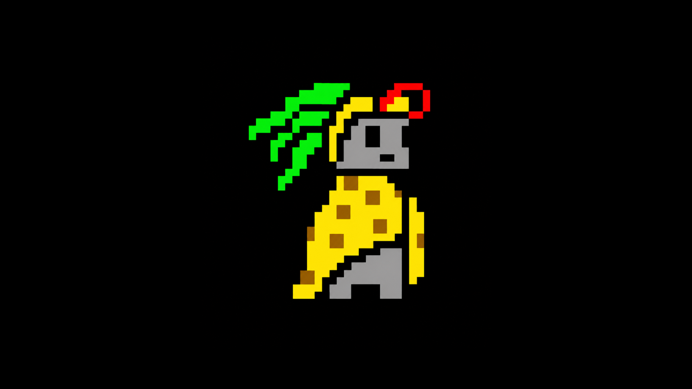
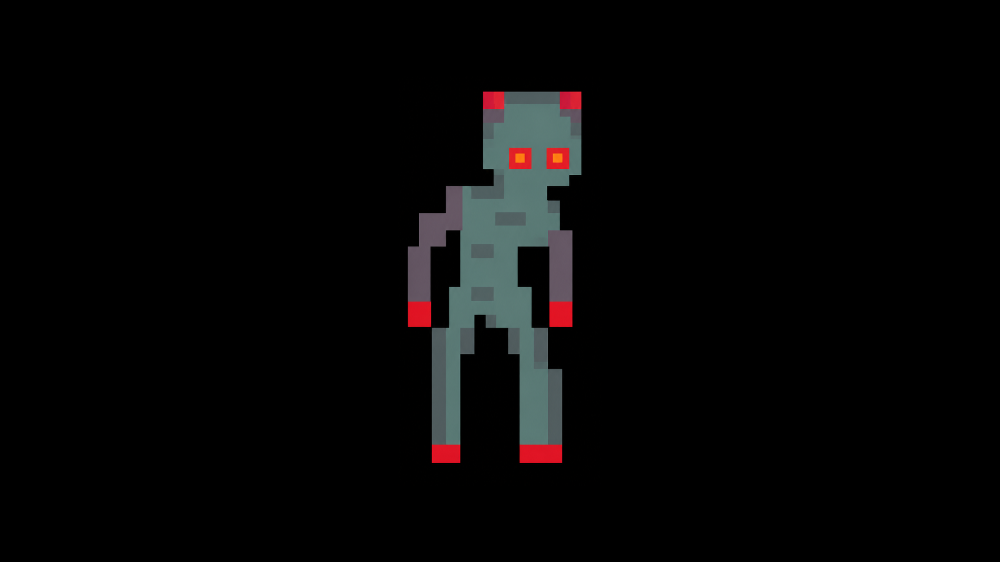
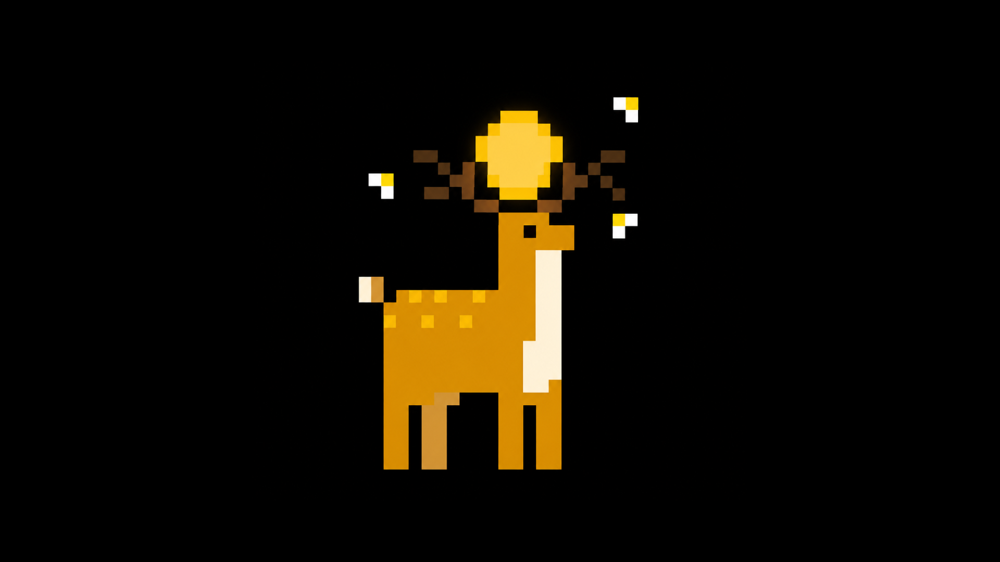
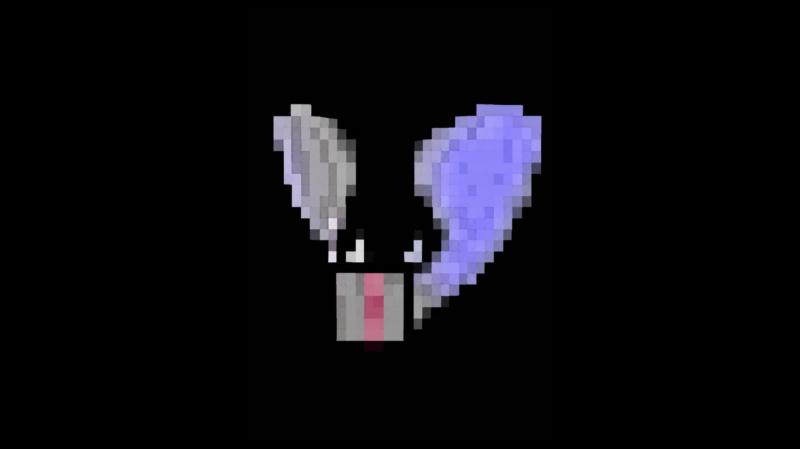
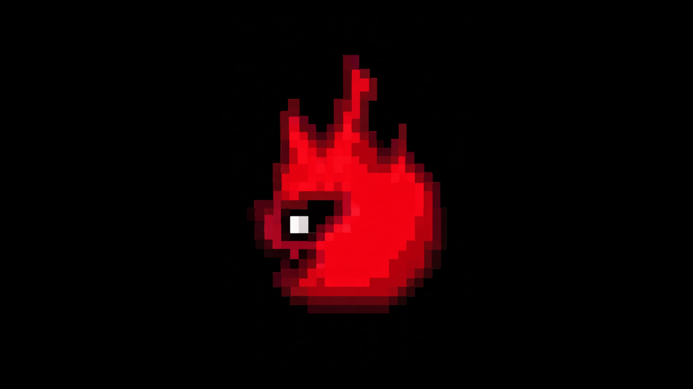
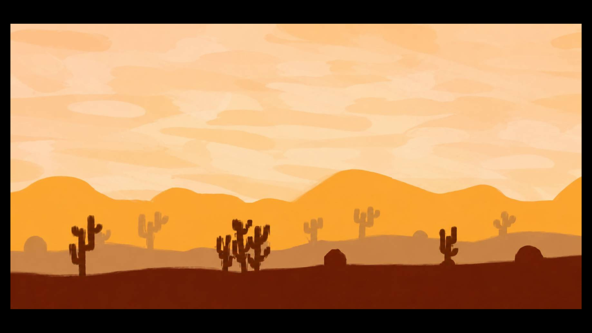

Un guerrero ancestral nacido en las ruinas sagradas del desierto. Desde pequeño fue entrenado por los antiguos sabios mayas para proteger los templos ocultos y los cristales de energía que mantienen el equilibrio del mundo. Su capa dorada representa la luz del sol, mientras que las plumas verdes simbolizan la conexión espiritual con la naturaleza y los dioses antiguos. Aunque parece tranquilo, en combate es rápido, inteligente y muy poderoso. Viaja por las dunas enfrentándose a criaturas oscuras y exploradores que buscan robar los secretos sagrados del desierto. Habilidades: ☀️ Luz Solar: dispara energía brillante capaz de dañar enemigos y activar mecanismos antiguos. 🌪️ Paso del Viento: aumenta su velocidad y le permite esquivar ataques rápidamente. 🛡️ Escudo Ancestral: crea una barrera temporal que reduce el daño recibido. 🔥 Furia del Sol: un ataque especial que libera toda la energía acumulada del desierto.

Una criatura oscura nacida de una antigua maldición en las ruinas del desierto. Hace muchos siglos, este ser era un guerrero que protegía los templos mayas, pero la energía prohibida de un cristal corrompido transformó su cuerpo y su alma. Ahora vaga entre las dunas durante la noche, buscando energía para seguir existiendo. Sus ojos rojos brillan en la oscuridad y su piel gris refleja el poder maldito que lo mantiene con vida. Aunque se mueve lentamente, es extremadamente resistente y peligroso cuando encuentra a un enemigo cerca. Habilidades: 🔴 Mirada Maldita: debilita a los enemigos cercanos y reduce su velocidad. ☠️ Golpe Infectado: sus ataques causan daño continuo por corrupción. 🌑 Resistencia Oscura: puede soportar grandes cantidades de daño sin detenerse. 💥 Explosión de Sombras: libera una onda oscura que empuja a los enemigos y apaga las fuentes de luz cercanas.

Una criatura espiritual creada por la energía del primer amanecer. Los antiguos habitantes del desierto creían que este venado aparecía únicamente ante las personas de corazón puro. Su brillo dorado ilumina la oscuridad y las pequeñas luces que lo rodean son espíritus guardianes que lo acompañan en su viaje. Aunque parece una criatura pacífica, posee una conexión mágica con la naturaleza y puede proteger el desierto cuando está en peligro. Habilidades: ✨ Aura de Luz: ilumina caminos ocultos y revela trampas invisibles. ⚡ Salto Celestial: puede atravesar grandes distancias en un solo salto. 🌙 Espíritus Curativos: invoca pequeñas luces que restauran energía lentamente. 🌟 Destello Sagrado: crea una explosión de luz que paraliza enemigos cercanos.

Un ser misterioso nacido de la energía de la luna y las sombras nocturnas. Flota silenciosamente en la oscuridad observando a quienes atraviesan el desierto durante la noche. Sus alas representan el equilibrio entre la luz y la oscuridad, y su presencia puede sentirse incluso antes de aparecer. Aunque parece tranquilo, posee poderes espirituales capaces de alterar el ambiente y confundir a sus enemigos. Habilidades: 🌙 Vuelo Fantasmal: puede atravesar obstáculos y moverse silenciosamente. ✨ Polvo Lunar: debilita enemigos reduciendo su velocidad y visión. 🖤 Aura Sombría: crea un área oscura que dificulta detectar su posición. 💫 Destello Astral: libera una poderosa onda de energía espiritual que paraliza por unos segundos.

Una pequeña criatura nacida del núcleo más profundo de los volcanes del desierto. Aunque parece una simple llama flotante, en realidad es un espíritu antiguo lleno de energía y furia. Sus ojos brillantes observan todo a su alrededor y su cuerpo cambia de intensidad dependiendo de sus emociones. Cuando se enfurece, el fuego que lo rodea crece y consume todo a su paso. Muchos aventureros creen que encontrar una de estas almas significa buena suerte… o un peligro inminente. Habilidades: 🔥 Explosión Ardiente: lanza ráfagas de fuego que queman a los enemigos con el tiempo. ⚡ Chispa Rápida: se mueve velozmente dejando un rastro de fuego. ☄️ Núcleo Volcánico: aumenta temporalmente el daño de todos sus ataques. 🌋 Tormenta de Brasas: invoca pequeñas llamas alrededor del campo de batalla.

Un inmenso territorio lleno de dunas interminables, ruinas antiguas y secretos enterrados bajo la arena. Durante el día, el calor extremo convierte el viaje en una prueba de resistencia, mientras que por la noche el desierto cambia completamente y aparecen criaturas espirituales bajo la luz de la luna. Entre las montañas y los cactus existen templos ocultos que guardan tesoros ancestrales y poderes olvidados. Muchos aventureros han intentado cruzarlo, pero pocos logran regresar. Características y peligros del desierto: 🌵 Tormentas de Arena: dificultan la visión y pueden separar al jugador de su camino. ☀️ Calor Extremo: consume lentamente la energía si no se encuentra refugio. 🗿 Ruinas Secretas: contienen acertijos, trampas y recompensas especiales. 🌌 Noches Espirituales: revelan caminos ocultos y criaturas mágicas. 🦂 Bestias del Desierto: enemigos salvajes que aparecen entre las dunas y protegen territorios antiguos.